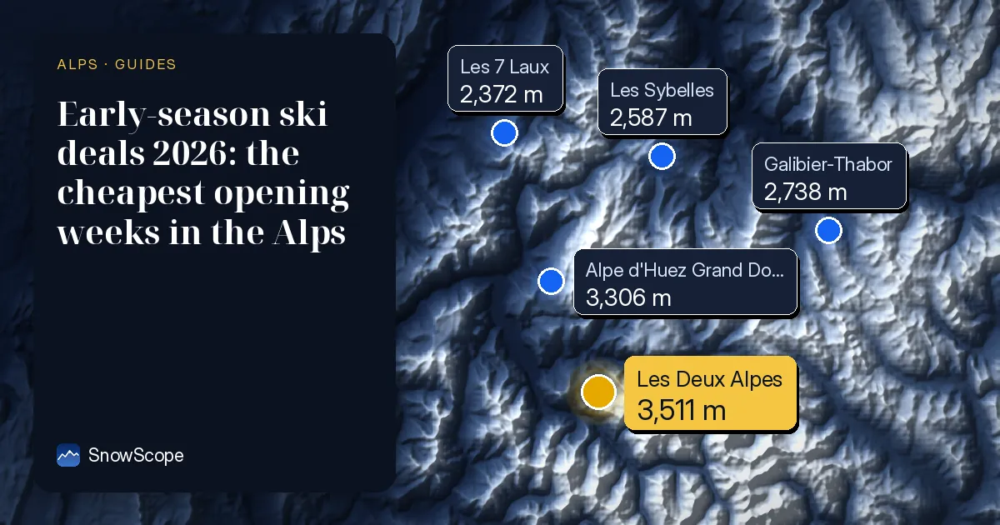
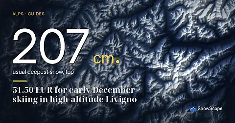

Early-season ski deals 2026: the cheapest opening weeks in the Alps
The cheapest days of the ski season are the first ones. Valloire-Valmeinier opens on 5 and 6 December 2026 with a 20 EUR pass, Les 2 Alpes sells its opening weekend of 28 and 29 November for 42 EUR, and Les Orres charges 34 EUR a day from 5 to 11 December. We put the best early deals on one calendar and checked how much snow those dates usually bring.
See the live snow forecast for Les Deux Alpes in the SnowScope appSnow depth, powder alerts and the 3D map, free.
Late November: the first weekend on snow
Les 2 Alpes opens the season on 28 and 29 November 2026 with a 42 EUR adult day pass, against 68 EUR for its normal flexible ticket. The glacier above the resort is the reason it can open so early: at mid-mountain, 2397 m, our snow history of 46 past winters shows 24 cm in a usual November, and the top is much deeper.
Livigno starts its promotion on the same weekend. From 28 November to 18 December 2026 an adult day costs 51.5 EUR and 6 days 258.5 EUR. From 19 to 25 December the day price is 66 EUR, and from 26 December 74.5 EUR.
Early December: the real bargains
Valloire-Valmeinier's opening weekend, 5 and 6 December 2026, is the cheapest deal we found: 20 EUR for the pass, ice rink included. Its standard day price for the winter is 54.9 EUR. At mid-mountain the resort usually goes from 24 cm in November to 67 cm in December, so the opening weekend often runs on a young base.
Les Orres uses a price calendar: 34 EUR a day from 5 to 11 December, 38.5 EUR from 12 to 18 December and 45.5 EUR from 19 December. Montgenèvre keeps 45.5 EUR until 18 December, then 56 EUR. In the Aosta valley, Monterosa Ski sells online with prices that move: the lowest day we saw was 40 EUR, the highest 71 EUR.
The week before Christmas: 6 days for less
For a full week, Serre Chevalier is the classic early-season deal: 276 EUR for 6 days from the opening to 18 December 2026, against 345 EUR from 19 December to 1 January 2027. Livigno's 258.5 EUR promotion runs to the same date.
The snow usually builds fast in December. At mid-mountain, a usual December holds 77 cm at Les 2 Alpes, 64 cm at Montgenèvre, 57 cm at Serre Chevalier, 54 cm at Les Orres, 48 cm at Livigno and 35 cm at Monterosa Ski. The later in December you go, the better your odds.
How to choose your early-season deal
If you want to be sure to ski, go high: Les 2 Alpes in late November, or Montgenèvre and Valloire-Valmeinier in December. If you want the lowest bill for a week, Serre Chevalier and Livigno before 18 December are the safest bets, with big areas that open more runs as the snow comes.
Monterosa Ski is the one to watch day by day: book its online low prices only after a good snowfall, since its usual December is the thinnest of the list.
Sleep on the dates of the deal
Early-season weeks are also the cheapest for accommodation, but only if your nights match the offer. The map in this article opens each resort on the dates of its deal, with stays under 120 EUR a night: the weekend of 27 to 29 November for Les 2 Alpes, 4 to 6 December for Valloire-Valmeinier, 5 to 11 December for Les Orres, and 12 to 18 December for Livigno and Serre Chevalier.
Opening dates always depend on the snow. Check the resort's site a few days before you leave, and buy the pass online when it is cheaper.
Tips for skiers
- Cheapest deal: Valloire-Valmeinier, 20 EUR on 5 and 6 December 2026.
- First weekend on snow: Les 2 Alpes, 42 EUR on 28 and 29 November 2026.
- Cheapest week before Christmas: Livigno 258.5 EUR or Serre Chevalier 276 EUR for 6 days, until 18 December.
- Always check the opening date: it depends on the snow.
More maps (external sites)
References and credits
- Les 2 Alpes, official ski pass shop, opening weekend offer www.skipass-2alpes.com/fr/forfaits/ski
- Les 2 Alpes, official ski pass shop, prices 2026-27 www.skipass-2alpes.com/en/pricing
- Valloire, official ski pass shop (Galibier-Thabor), winter 2026-27 skipass.valloire.com/fr/
- Les Orres, official ski pass prices 2026-27 www.lesorres.com/forfaits-de-ski
- Livigno, official ski pass price list 2026-27 (PDF) www.livigno.eu/hubfs/tariffe_26-27.pdf
- Montgenèvre, official ski pass prices 2026-27 skipass.montgenevre.com/fr/tarifs-guichet
- Serre Chevalier, official booking site, ski passes 2026-27 reservation.serre-chevalier.com/achetez-vos-ski-pass-serre-chevalier-et-autres-prestations.html
- Monterosa Ski, official dynamic pricing page 2026-27 monterosaski.eu/en/tariffazione-dinamica-monterosa-ski-19318
About these numbers
Snow numbers: SnowScope snow history, 46 past winters (1980-81 to 2025-26) at three heights of the resort, a model of the past corrected for height (an estimate for an area, not resort reports). Lift, run and access facts: the sources listed below, checked on the date shown.
Cite this report
For research, teaching or the press: the numbers and charts are free to reuse under CC BY 4.0 with this citation.
SnowScope (2026), Early-season ski deals 2026: the cheapest opening weeks in the Alps, https://snowscope.app/blog/en/2026/11/early-season-ski-deals-2026-cheapest-opening-weeks-alps.html, accessed 2026-11-19
SnowScope (Atlas Labs). (2026, November 19). Early-season ski deals 2026: the cheapest opening weeks in the Alps. SnowScope snow reports. https://snowscope.app/blog/en/2026/11/early-season-ski-deals-2026-cheapest-opening-weeks-alps.html
BibTeX
@misc{snowscope2026earlyseasonskideals2026c,
author = {{SnowScope (Atlas Labs)}},
title = {Early-season ski deals 2026: the cheapest opening weeks in the Alps},
year = {2026},
month = nov,
howpublished = {\url{https://snowscope.app/blog/en/2026/11/early-season-ski-deals-2026-cheapest-opening-weeks-alps.html}},
note = {Published 2026-11-19 12:42 UTC; accessed 2026-11-19}
}· CC BY 4.0 · Methods, data and tools →
Les Deux Alpes: snow and temperature by height, this winter vs last (tools) →
Follow Les Deux Alpes
Free: a message when fresh snow is coming, and the forecast every morning.
More snow reports

Plan your December 2026 trip to Les Orres by matching weekly pass prices with our snow history of 46 past winters.

Valloire-Valmeinier offers 131 km of runs and a 98 % chance of 30 cm of snow at mid-mountain by mid-December.

Ski Livigno for 51.50 EUR per day before December 18 when the snow at the top reaches 30cm in 100 % of past winters.